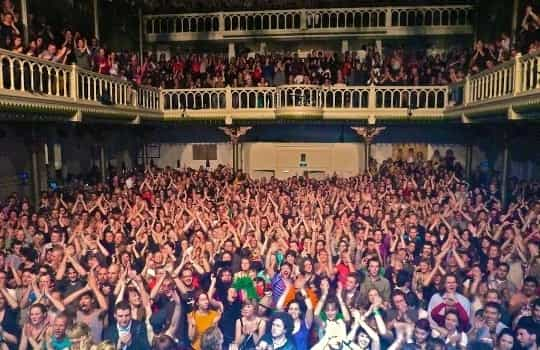

Daryush "Roosh" Valizadeh created ROK in October 2012. You can visit his blog at RooshV.com or follow him on Twitter and Facebook.


Most of the knowledge you have is due to the internet. Public education in the West has failed to give you a proper understanding of the world or skills that would be useful for navigating through life, forcing you to educate yourself at your own pace and on your own terms. Through that, you have created bonds with other men in ad-hoc communities online. While the knowledge you have will be forever useful to you, the communities that sprout from these knowledge centers pale in comparison to real communities of the past. We can instantly access the minds of men through the internet, but we’re losing the ability to connect with them in person.
I came to understand how pervasive the internet is in my life when I imagined it going offline. What would happen if there were no more web pages, social networking, connected smartphones, or video-on-demand? Back to the “stone age” of programmed television and paper books. Perhaps more severe is that I’d lose touch with nearly every man I know. Outside of a couple dozen men whose phone numbers I have, my social world would collapse, and it would only be replaced by men who live in my city. No more trading advice, knowledge, and tips with men halfway around the world on a daily basis.
If the internet went offline, which thought leader would I follow to make me feel like I’m gaining critical value? How would I participate in online activism and meme wars with fellow e-warriors? How would I bathe in the glory of liberal tears with my online friends after angering feminists with a viral article? Where would I share a crazy piece of news with hundreds of men who share a similar belief system as I do? An audience of potentially tens of thousands would be reduced to three or four in my town, and it’s this realization that tells me it’s not friendships I’m developing online as much as the gratification that I’m a somebody who is making a difference, when really I’m just a communications node, a replaceable unit in a messenger chain.
I have used an app called Periscope, which allows me to broadcast live video from my smartphone. The biggest broadcast I’ve done had over 1,000 simultaneous viewers. Here’s what a room of 1,000 people look like.

During that broadcast, I was in my room, alone, talking at an screen to a faceless mass of people who I couldn’t see or touch. There was no genuine human connection, and if I wanted it at that moment, I would have found it easier to knock on my neighbor’s door, a man who I’ve seen but never properly met. If there was an external camera in the room filming me without sound, it would reveal a strange man talking to himself in front of a rectangle of plastic and glass.
Return Of Kings regularly gets 1 million unique visitors a month, a number that is greater than than the population of several dozen countries, but I don’t know exactly who those people are, and if you told me there was a mistake in the statistics, and that the site actually receives 1 billion unique visitors a month, I can’t fathom what difference that would make besides more advertising revenue.
No matter how many followers you have, how far your meme spreads, how many upvotes your comment gets, or how many pats on the back you get from the internet mob, you will remain deeply unsatisfied that these huge numbers—this powerful influence—is not human connection but merely a simulation of connection. Ultimately, you’re interacting with pixels and avatars, mere representations of real community, but never real itself. I’ll give you a million followers tomorrow, and within one month you will feel as disconnected as ever, because your true need is not a simulation of community but real community. A group of real friends in your town, who care about your safety and interests as deeply as you care about theirs, is worth more than millions of simulated friends, fans, or admirers on the internet.
Maintaining real communities and friends in person is hard. You can’t just “log off” when you want. You can’t shitpost or troll without repercussions. You have to sacrifice and accommodate to their needs. You have to be respectful to their feelings and particular insecurities, because you’d expect the same from them. One genuine friendship is harder to maintain than satisfying one thousand followers online where expectations and standards are lower, and where little is asked of you but to provide entertainment and sporadic insight.
The internet has given us much, but also made us reluctant to put in the work for real-life connections and to adapt to another person’s flaws and weaknesses, but we must try. As a man who has amassed thousands of internet followers, it’s the face-to-face interactions with those followers I love the most, because it transcends from the simulated to the real. Without them, I’m afraid I’d slowly lose my humanity in an online sea of a billions avatars that are human-like, but still far from it.
This article was originally published on Roosh V.
Read More: Are We Living In A Computer Simulation?